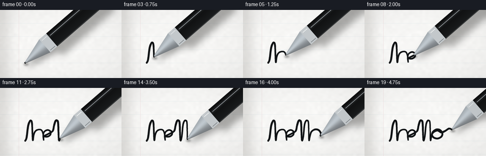
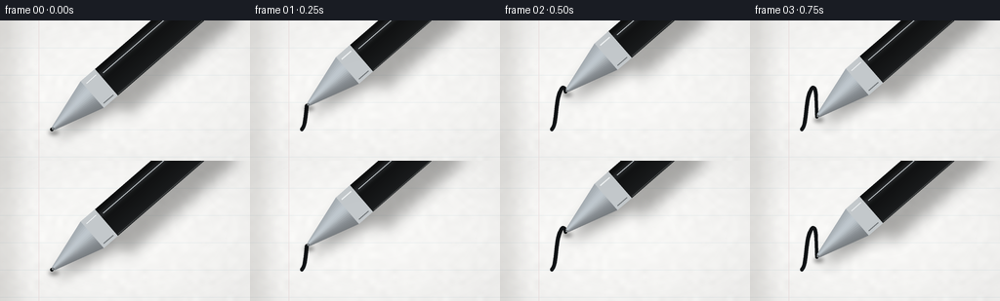
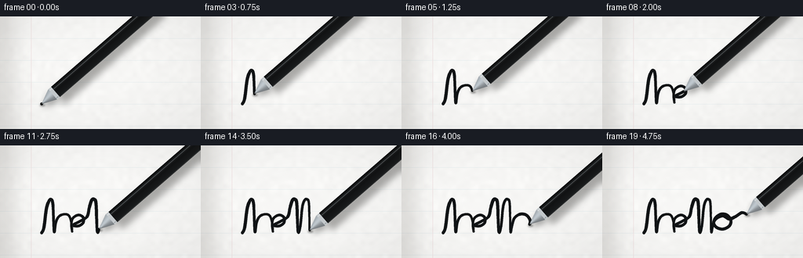
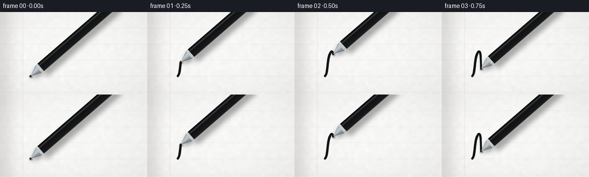

CODING AGENTS AS PIXEL WORLD MODELS
traex/DeepSeek-V4.1-Flash · phygen_035
点击播放 · 原生 RGB 像素
逐轮保存的候选
回放视频、检查图与代码变化。
每份候选均可单独播放。实际图片检查记录在下方工具轨迹中。
候选 01播放与检查图
点击播放 · 原生 RGB 像素


展开代码变化
--- 上一保存版本
+++ 本次保存版本
@@ -0,0 +1,383 @@
+from pathlib import Path
+
+import numpy as np
+from PIL import Image, ImageDraw, ImageFilter
+
+import artifact_io
+
+
+CASE_DIR = Path(__file__).resolve().parent
+WIDTH = 256
+HEIGHT = 144
+SCALE = 4
+RW = WIDTH * SCALE
+RH = HEIGHT * SCALE
+FRAMES = 20
+FPS = 4.0
+
+
+def catmull_rom(points, samples_per_segment=34):
+ """Return a smooth curve passing through every anchor point."""
+ points = np.asarray(points, dtype=np.float64)
+ padded = np.vstack((points[0], points, points[-1]))
+ curve = []
+ for index in range(1, len(padded) - 2):
+ p0, p1, p2, p3 = padded[index - 1 : index + 3]
+ t = np.linspace(0.0, 1.0, samples_per_segment, endpoint=False)[:, None]
+ t2 = t * t
+ t3 = t2 * t
+ segment = 0.5 * (
+ (2.0 * p1)
+ + (-p0 + p2) * t
+ + (2.0 * p0 - 5.0 * p1 + 4.0 * p2 - p3) * t2
+ + (-p0 + 3.0 * p1 - 3.0 * p2 + p3) * t3
+ )
+ curve.append(segment)
+ curve.append(points[-1][None, :])
+ return np.vstack(curve)
+
+
+def make_paper():
+ rng = np.random.default_rng(3501)
+
+ coarse = rng.normal(0.0, 1.0, (RH // 24 + 2, RW // 24 + 2))
+ coarse_img = Image.fromarray(np.uint8(np.clip(coarse * 28.0 + 128.0, 0, 255)))
+ coarse = np.asarray(
+ coarse_img.resize((RW, RH), Image.Resampling.BICUBIC), dtype=np.float32
+ )
+ coarse = (coarse - coarse.mean()) / max(coarse.std(), 1.0)
+ fine = rng.normal(0.0, 1.0, (RH, RW)).astype(np.float32)
+
+ yy, xx = np.mgrid[0:RH, 0:RW].astype(np.float32)
+ light = 250.2 - 3.2 * (xx / RW) - 1.6 * (yy / RH)
+ light += coarse * 1.15 + fine * 0.42
+ light -= 1.5 * np.exp(-((xx / RW - 0.13) ** 2 + (yy / RH - 0.08) ** 2) / 0.035)
+
+ paper = np.empty((RH, RW, 3), dtype=np.float32)
+ paper[..., 0] = light + 0.8
+ paper[..., 1] = light + 0.4
+ paper[..., 2] = light - 1.3
+ paper = np.clip(paper, 0, 255).astype(np.uint8)
+
+ image = Image.fromarray(paper, "RGB").convert("RGBA")
+ overlay = Image.new("RGBA", image.size, (0, 0, 0, 0))
+ draw = ImageDraw.Draw(overlay)
+
+ # Soft notebook ruling, intentionally light so the ink remains the subject.
+ for y in (28, 56, 84, 112, 140):
+ draw.rectangle(
+ (0, int(y * SCALE), RW, int((y + 0.45) * SCALE)),
+ fill=(139, 181, 197, 46),
+ )
+ draw.rectangle(
+ (int(39.5 * SCALE), 0, int(40.1 * SCALE), RH),
+ fill=(205, 143, 151, 52),
+ )
+
+ # A few tiny paper fibers keep the white surface from looking synthetic.
+ for _ in range(105):
+ x = rng.uniform(0, RW)
+ y = rng.uniform(0, RH)
+ length = rng.uniform(3.0, 12.0) * SCALE / 4.0
+ angle = rng.uniform(-0.25, 0.25)
+ x2 = x + np.cos(angle) * length
+ y2 = y + np.sin(angle) * length
+ alpha = int(rng.integers(9, 19))
+ draw.line((x, y, x2, y2), fill=(150, 145, 132, alpha), width=1)
+
+ image.alpha_composite(overlay)
+
+ # A subtle shadow along the binding side gives the page a physical edge.
+ edge = Image.new("L", (RW, RH), 0)
+ edge_draw = ImageDraw.Draw(edge)
+ edge_draw.rectangle((0, 0, int(18 * SCALE), RH), fill=34)
+ edge = edge.filter(ImageFilter.GaussianBlur(int(10 * SCALE)))
+ shade = Image.new("RGBA", (RW, RH), (72, 65, 55, 255))
+ shade.putalpha(edge)
+ image.alpha_composite(shade)
+ return image.convert("RGB")
+
+
+def point_on_curve(curve, cumulative, progress):
+ target = float(np.clip(progress, 0.0, 1.0)) * cumulative[-1]
+ index = int(np.searchsorted(cumulative, target, side="right") - 1)
+ index = min(max(index, 0), len(curve) - 2)
+ span = max(cumulative[index + 1] - cumulative[index], 1e-9)
+ blend = (target - cumulative[index]) / span
+ return curve[index] * (1.0 - blend) + curve[index + 1] * blend
+
+
+def draw_ink(layer, curve, cumulative, progress):
+ target = float(np.clip(progress, 0.0, 1.0)) * cumulative[-1]
+ count = int(np.searchsorted(cumulative, target, side="right"))
+ count = min(max(count, 2), len(curve))
+ draw = ImageDraw.Draw(layer)
+
+ for index in range(count - 1):
+ x0, y0 = curve[index]
+ x1, y1 = curve[index + 1]
+ arc = cumulative[index] / max(cumulative[-1], 1.0)
+ pressure = 12.7 + 1.9 * np.sin(arc * 15.0 + 0.6)
+ pressure += 0.7 * np.sin(arc * 41.0)
+ width = int(round(pressure))
+ draw.line((x0, y0, x1, y1), fill=(12, 15, 17, 248), width=width)
+ radius = width * 0.5
+ draw.ellipse(
+ (x1 - radius, y1 - radius, x1 + radius, y1 + radius),
+ fill=(12, 15, 17, 248),
+ )
+
+
+def cross_point(tip, along, across, distance, offset, half_width):
+ return (
+ tip[0] + along[0] * distance + across[0] * offset * half_width,
+ tip[1] + along[1] * distance + across[1] * offset * half_width,
+ )
+
+
+def draw_pen(canvas, tip_output, angle_degrees=-41.0):
+ tip = (tip_output[0] * SCALE, tip_output[1] * SCALE)
+ angle = np.deg2rad(angle_degrees)
+ along = np.array([np.cos(angle), np.sin(angle)], dtype=np.float64)
+ across = np.array([-along[1], along[0]], dtype=np.float64)
+
+ # Shadow first: a broad barrel shadow and a tight contact shadow at the nib.
+ shadow = Image.new("RGBA", canvas.size, (0, 0, 0, 0))
+ shadow_draw = ImageDraw.Draw(shadow)
+ offset = np.array([12.0, 18.0]) * SCALE
+ body_points = []
+ for distance, side in ((72.0, -18.0), (900.0, -18.0), (900.0, 18.0), (72.0, 18.0)):
+ point = cross_point(tip, along, across, distance * SCALE, side / 18.0, 18.0 * SCALE)
+ body_points.append((point[0] + offset[0], point[1] + offset[1]))
+ shadow_draw.polygon(body_points, fill=(37, 36, 33, 94))
+
+ cone_shadow = []
+ for distance, side in ((2.0, -1.5), (72.0, -18.0), (72.0, 18.0), (2.0, 1.5)):
+ point = cross_point(tip, along, across, distance * SCALE, side / 18.0, 18.0 * SCALE)
+ cone_shadow.append((point[0] + offset[0] * 0.45, point[1] + offset[1] * 0.45))
+ shadow_draw.polygon(cone_shadow, fill=(30, 30, 28, 105))
+ shadow = shadow.filter(ImageFilter.GaussianBlur(int(7 * SCALE)))
+ canvas.alpha_composite(shadow)
+
+ contact = Image.new("RGBA", canvas.size, (0, 0, 0, 0))
+ contact_draw = ImageDraw.Draw(contact)
+ cx = tip[0] + 2.0 * SCALE
+ cy = tip[1] + 3.0 * SCALE
+ contact_draw.ellipse(
+ (
+ cx - 5.0 * SCALE,
+ cy - 2.0 * SCALE,
+ cx + 5.0 * SCALE,
+ cy + 2.0 * SCALE,
+ ),
+ fill=(20, 20, 18, 125),
+ )
+ contact = contact.filter(ImageFilter.GaussianBlur(2.0 * SCALE))
+ canvas.alpha_composite(contact)
+
+ pen = Image.new("RGBA", canvas.size, (0, 0, 0, 0))
+ draw = ImageDraw.Draw(pen)
+
+ # Long black barrel, built from thin longitudinal strips for a rounded gloss.
+ strip_count = 28
+ for strip in range(strip_count):
+ q0 = -1.0 + 2.0 * strip / strip_count
+ q1 = -1.0 + 2.0 * (strip + 1) / strip_count
+ qm = (q0 + q1) * 0.5
+ luminance = (
+ 12.0
+ + 8.5 * (qm + 1.0)
+ + 24.0 * np.exp(-((qm + 0.53) / 0.19) ** 2)
+ + 8.0 * np.exp(-((qm - 1.0) / 0.12) ** 2)
+ + 5.0 * np.exp(-((qm + 1.0) / 0.10) ** 2)
+ )
+ color = (
+ int(np.clip(luminance * 0.94, 0, 255)),
+ int(np.clip(luminance, 0, 255)),
+ int(np.clip(luminance * 1.04, 0, 255)),
+ 255,
+ )
+ polygon = [
+ cross_point(tip, along, across, 72.0 * SCALE, q0, 18.0 * SCALE),
+ cross_point(tip, along, across, 920.0 * SCALE, q0, 18.0 * SCALE),
+ cross_point(tip, along, across, 920.0 * SCALE, q1, 18.0 * SCALE),
+ cross_point(tip, along, across, 72.0 * SCALE, q1, 18.0 * SCALE),
+ ]
+ draw.polygon(polygon, fill=color)
+
+ # Silver conical writing point.
+ cone_steps = 18
+ for step in range(cone_steps):
+ q0 = -1.0 + 2.0 * step / cone_steps
+ q1 = -1.0 + 2.0 * (step + 1) / cone_steps
+ qm = (q0 + q1) * 0.5
+ luminance = 151.0 + 51.0 * np.exp(-((qm + 0.23) / 0.55) ** 2) - 21.0 * qm
+ color = (
+ int(np.clip(luminance * 0.93, 0, 255)),
+ int(np.clip(luminance * 0.97, 0, 255)),
+ int(np.clip(luminance, 0, 255)),
+ 255,
+ )
+ polygon = [
+ cross_point(tip, along, across, 2.0 * SCALE, q0, 2.0 * SCALE),
+ cross_point(tip, along, across, 55.0 * SCALE, q0, 18.0 * SCALE),
+ cross_point(tip, along, across, 55.0 * SCALE, q1, 18.0 * SCALE),
+ cross_point(tip, along, across, 2.0 * SCALE, q1, 2.0 * SCALE),
+ ]
+ draw.polygon(polygon, fill=color)
+
+ # Bright metal collar between cone and barrel.
+ collar = [
+ cross_point(tip, along, across, 55.0 * SCALE, -1.0, 18.0 * SCALE),
+ cross_point(tip, along, across, 74.0 * SCALE, -1.0, 18.0 * SCALE),
+ cross_point(tip, along, across, 74.0 * SCALE, 1.0, 18.0 * SCALE),
+ cross_point(tip, along, across, 55.0 * SCALE, 1.0, 18.0 * SCALE),
+ ]
+ draw.polygon(collar, fill=(196, 201, 204, 255))
+ draw.line(
+ (
+ *cross_point(tip, along, across, 58.0 * SCALE, -0.7, 18.0 * SCALE),
+ *cross_point(tip, along, across, 71.0 * SCALE, -0.7, 18.0 * SCALE),
+ ),
+ fill=(241, 244, 245, 230),
+ width=int(1.3 * SCALE),
+ )
+ draw.line(
+ (
+ *cross_point(tip, along, across, 58.0 * SCALE, 0.8, 18.0 * SCALE),
+ *cross_point(tip, along, across, 71.0 * SCALE, 0.8, 18.0 * SCALE),
+ ),
+ fill=(106, 112, 116, 220),
+ width=int(1.0 * SCALE),
+ )
+
+ # Fine barrel highlight and dark lower rim.
+ highlight_start = cross_point(tip, along, across, 78.0 * SCALE, -0.52, 18.0 * SCALE)
+ highlight_end = cross_point(tip, along, across, 900.0 * SCALE, -0.52, 18.0 * SCALE)
+ draw.line(
+ (*highlight_start, *highlight_end),
+ fill=(137, 151, 160, 118),
+ width=int(0.75 * SCALE),
+ )
+ lower_start = cross_point(tip, along, across, 76.0 * SCALE, 0.94, 18.0 * SCALE)
+ lower_end = cross_point(tip, along, across, 900.0 * SCALE, 0.94, 18.0 * SCALE)
+ draw.line(
+ (*lower_start, *lower_end),
+ fill=(54, 58, 61, 180),
+ width=int(0.6 * SCALE),
+ )
+
+ # The tiny ball at the nib catches a pinpoint of light.
+ nib = cross_point(tip, along, across, 1.5 * SCALE, 0.0, 0.0)
+ draw.ellipse(
+ (nib[0] - 1.2 * SCALE, nib[1] - 1.2 * SCALE, nib[0] + 1.2 * SCALE, nib[1] + 1.2 * SCALE),
+ fill=(91, 96, 99, 255),
+ )
+ draw.ellipse(
+ (nib[0] - 0.45 * SCALE, nib[1] - 0.55 * SCALE, nib[0] + 0.35 * SCALE, nib[1] + 0.25 * SCALE),
+ fill=(229, 233, 234, 220),
+ )
+
+ canvas.alpha_composite(pen)
+
+
+def finish_frame(canvas):
+ frame = canvas.convert("RGB").resize((WIDTH, HEIGHT), Image.Resampling.LANCZOS)
+ array = np.asarray(frame, dtype=np.float32)
+
+ # Gentle highlight rolloff and a nearly invisible vignette.
+ yy, xx = np.mgrid[0:HEIGHT, 0:WIDTH].astype(np.float32)
+ nx = (xx - WIDTH * 0.5) / (WIDTH * 0.5)
+ ny = (yy - HEIGHT * 0.5) / (HEIGHT * 0.5)
+ vignette = 1.0 - 0.025 * np.clip(nx * nx + ny * ny, 0.0, 1.7)
+ array *= vignette[..., None]
+ return np.clip(array, 0, 255).astype(np.uint8)
+
+
+def main():
+ paper = make_paper()
+
+ anchors_output = [
+ (53.0, 112.0),
+ (56.0, 105.0),
+ (59.0, 82.0),
+ (62.0, 72.0),
+ (65.0, 69.0),
+ (67.5, 76.0),
+ (69.0, 110.0),
+ (71.0, 99.0),
+ (75.0, 91.0),
+ (82.0, 88.0),
+ (88.0, 90.0),
+ (91.0, 99.0),
+ (92.0, 110.0),
+ (91.0, 101.0),
+ (93.0, 93.0),
+ (100.0, 89.0),
+ (106.0, 92.0),
+ (106.0, 99.0),
+ (100.0, 103.0),
+ (93.0, 102.0),
+ (102.0, 97.0),
+ (111.0, 91.0),
+ (114.0, 79.0),
+ (117.0, 70.0),
+ (120.0, 69.0),
+ (122.5, 75.0),
+ (124.0, 110.0),
+ (127.0, 103.0),
+ (129.5, 79.0),
+ (132.5, 70.0),
+ (135.5, 69.0),
+ (138.0, 75.0),
+ (139.0, 110.0),
+ (141.0, 102.0),
+ (144.0, 93.0),
+ (151.0, 88.0),
+ (159.0, 89.0),
+ (164.0, 96.0),
+ (162.0, 103.0),
+ (154.0, 107.0),
+ (146.0, 105.0),
+ (142.0, 99.0),
+ (146.0, 93.0),
+ (154.0, 90.0),
+ (162.0, 94.0),
+ (170.0, 91.0),
+ (178.0, 86.0),
+ (184.0, 88.0),
+ ]
+ curve_output = catmull_rom(anchors_output)
+ curve = curve_output * SCALE
+ differences = np.diff(curve, axis=0)
+ cumulative = np.r_[0.0, np.cumsum(np.hypot(differences[:, 0], differences[:, 1]))]
+
+ frames = []
+ for frame_index in range(FRAMES):
+ t = frame_index / (FRAMES - 1)
+ progress = t - 0.045 * np.sin(2.0 * np.pi * t) / (2.0 * np.pi)
+ progress = float(np.clip(progress, 0.0, 1.0))
+
+ canvas = paper.copy().convert("RGBA")
+
+ ink = Image.new("RGBA", canvas.size, (0, 0, 0, 0))
+ draw_ink(ink, curve, cumulative, progress)
+ # A tiny soft halo makes the ink feel absorbed into the paper.
+ halo = ink.filter(ImageFilter.GaussianBlur(int(0.55 * SCALE)))
+ halo.putalpha(halo.getchannel("A").point(lambda value: int(value * 0.16)))
+ canvas.alpha_composite(halo)
+ canvas.alpha_composite(ink)
+
+ tip = point_on_curve(curve, cumulative, progress) / SCALE
+ # Small natural pressure movement, never enough to detach from the line.
+ tip = tip + np.array(
+ [0.10 * np.sin(frame_index * 1.7), 0.08 * np.cos(frame_index * 1.3)]
+ )
+ draw_pen(canvas, tip)
+ frames.append(finish_frame(canvas))
+
+ artifact_io.save(np.asarray(frames, dtype=np.uint8), CASE_DIR)
+
+
+if __name__ == "__main__":
+ main()
候选 02播放与检查图
点击播放 · 原生 RGB 像素


展开代码变化
--- 上一保存版本
+++ 本次保存版本
@@ -59,7 +59,7 @@
paper[..., 2] = light - 1.3
paper = np.clip(paper, 0, 255).astype(np.uint8)
- image = Image.fromarray(paper, "RGB").convert("RGBA")
+ image = Image.fromarray(paper).convert("RGBA")
overlay = Image.new("RGBA", image.size, (0, 0, 0, 0))
draw = ImageDraw.Draw(overlay)
@@ -140,46 +140,63 @@
angle = np.deg2rad(angle_degrees)
along = np.array([np.cos(angle), np.sin(angle)], dtype=np.float64)
across = np.array([-along[1], along[0]], dtype=np.float64)
+ half_width = 8.6
+ cone_length = 19.0
+ barrel_start = 23.5
# Shadow first: a broad barrel shadow and a tight contact shadow at the nib.
shadow = Image.new("RGBA", canvas.size, (0, 0, 0, 0))
shadow_draw = ImageDraw.Draw(shadow)
- offset = np.array([12.0, 18.0]) * SCALE
+ offset = np.array([6.0, 9.0]) * SCALE
body_points = []
- for distance, side in ((72.0, -18.0), (900.0, -18.0), (900.0, 18.0), (72.0, 18.0)):
- point = cross_point(tip, along, across, distance * SCALE, side / 18.0, 18.0 * SCALE)
+ for distance, side in (
+ (barrel_start, -half_width),
+ (900.0, -half_width),
+ (900.0, half_width),
+ (barrel_start, half_width),
+ ):
+ point = cross_point(
+ tip, along, across, distance * SCALE, side / half_width, half_width * SCALE
+ )
body_points.append((point[0] + offset[0], point[1] + offset[1]))
shadow_draw.polygon(body_points, fill=(37, 36, 33, 94))
cone_shadow = []
- for distance, side in ((2.0, -1.5), (72.0, -18.0), (72.0, 18.0), (2.0, 1.5)):
- point = cross_point(tip, along, across, distance * SCALE, side / 18.0, 18.0 * SCALE)
- cone_shadow.append((point[0] + offset[0] * 0.45, point[1] + offset[1] * 0.45))
+ for distance, side in (
+ (1.5, -0.6),
+ (cone_length, -half_width),
+ (cone_length, half_width),
+ (1.5, 0.6),
+ ):
+ point = cross_point(
+ tip, along, across, distance * SCALE, side / half_width, half_width * SCALE
+ )
+ cone_shadow.append((point[0] + offset[0] * 0.38, point[1] + offset[1] * 0.38))
shadow_draw.polygon(cone_shadow, fill=(30, 30, 28, 105))
- shadow = shadow.filter(ImageFilter.GaussianBlur(int(7 * SCALE)))
+ shadow = shadow.filter(ImageFilter.GaussianBlur(int(4 * SCALE)))
canvas.alpha_composite(shadow)
contact = Image.new("RGBA", canvas.size, (0, 0, 0, 0))
contact_draw = ImageDraw.Draw(contact)
- cx = tip[0] + 2.0 * SCALE
- cy = tip[1] + 3.0 * SCALE
+ cx = tip[0] + 1.1 * SCALE
+ cy = tip[1] + 1.6 * SCALE
contact_draw.ellipse(
(
- cx - 5.0 * SCALE,
- cy - 2.0 * SCALE,
- cx + 5.0 * SCALE,
- cy + 2.0 * SCALE,
+ cx - 3.2 * SCALE,
+ cy - 1.25 * SCALE,
+ cx + 3.2 * SCALE,
+ cy + 1.25 * SCALE,
),
fill=(20, 20, 18, 125),
)
- contact = contact.filter(ImageFilter.GaussianBlur(2.0 * SCALE))
+ contact = contact.filter(ImageFilter.GaussianBlur(1.1 * SCALE))
canvas.alpha_composite(contact)
pen = Image.new("RGBA", canvas.size, (0, 0, 0, 0))
draw = ImageDraw.Draw(pen)
# Long black barrel, built from thin longitudinal strips for a rounded gloss.
- strip_count = 28
+ strip_count = 22
for strip in range(strip_count):
q0 = -1.0 + 2.0 * strip / strip_count
q1 = -1.0 + 2.0 * (strip + 1) / strip_count
@@ -198,10 +215,14 @@
255,
)
polygon = [
- cross_point(tip, along, across, 72.0 * SCALE, q0, 18.0 * SCALE),
- cross_point(tip, along, across, 920.0 * SCALE, q0, 18.0 * SCALE),
- cross_point(tip, along, across, 920.0 * SCALE, q1, 18.0 * SCALE),
- cross_point(tip, along, across, 72.0 * SCALE, q1, 18.0 * SCALE),
+ cross_point(
+ tip, along, across, barrel_start * SCALE, q0, half_width * SCALE
+ ),
+ cross_point(tip, along, across, 920.0 * SCALE, q0, half_width * SCALE),
+ cross_point(tip, along, across, 920.0 * SCALE, q1, half_width * SCALE),
+ cross_point(
+ tip, along, across, barrel_start * SCALE, q1, half_width * SCALE
+ ),
]
draw.polygon(polygon, fill=color)
@@ -219,62 +240,94 @@
255,
)
polygon = [
- cross_point(tip, along, across, 2.0 * SCALE, q0, 2.0 * SCALE),
- cross_point(tip, along, across, 55.0 * SCALE, q0, 18.0 * SCALE),
- cross_point(tip, along, across, 55.0 * SCALE, q1, 18.0 * SCALE),
- cross_point(tip, along, across, 2.0 * SCALE, q1, 2.0 * SCALE),
+ cross_point(tip, along, across, 1.4 * SCALE, q0, 0.75 * SCALE),
+ cross_point(
+ tip, along, across, cone_length * SCALE, q0, half_width * SCALE
+ ),
+ cross_point(
+ tip, along, across, cone_length * SCALE, q1, half_width * SCALE
+ ),
+ cross_point(tip, along, across, 1.4 * SCALE, q1, 0.75 * SCALE),
]
draw.polygon(polygon, fill=color)
# Bright metal collar between cone and barrel.
collar = [
- cross_point(tip, along, across, 55.0 * SCALE, -1.0, 18.0 * SCALE),
- cross_point(tip, along, across, 74.0 * SCALE, -1.0, 18.0 * SCALE),
- cross_point(tip, along, across, 74.0 * SCALE, 1.0, 18.0 * SCALE),
- cross_point(tip, along, across, 55.0 * SCALE, 1.0, 18.0 * SCALE),
+ cross_point(tip, along, across, cone_length * SCALE, -1.0, half_width * SCALE),
+ cross_point(
+ tip, along, across, barrel_start * SCALE, -1.0, half_width * SCALE
+ ),
+ cross_point(tip, along, across, barrel_start * SCALE, 1.0, half_width * SCALE),
+ cross_point(tip, along, across, cone_length * SCALE, 1.0, half_width * SCALE),
]
draw.polygon(collar, fill=(196, 201, 204, 255))
draw.line(
(
- *cross_point(tip, along, across, 58.0 * SCALE, -0.7, 18.0 * SCALE),
- *cross_point(tip, along, across, 71.0 * SCALE, -0.7, 18.0 * SCALE),
+ *cross_point(
+ tip, along, across, 20.0 * SCALE, -0.72, half_width * SCALE
+ ),
+ *cross_point(
+ tip, along, across, 22.8 * SCALE, -0.72, half_width * SCALE
+ ),
),
fill=(241, 244, 245, 230),
- width=int(1.3 * SCALE),
+ width=max(1, int(0.7 * SCALE)),
)
draw.line(
(
- *cross_point(tip, along, across, 58.0 * SCALE, 0.8, 18.0 * SCALE),
- *cross_point(tip, along, across, 71.0 * SCALE, 0.8, 18.0 * SCALE),
+ *cross_point(
+ tip, along, across, 20.0 * SCALE, 0.78, half_width * SCALE
+ ),
+ *cross_point(
+ tip, along, across, 22.8 * SCALE, 0.78, half_width * SCALE
+ ),
),
fill=(106, 112, 116, 220),
- width=int(1.0 * SCALE),
+ width=max(1, int(0.55 * SCALE)),
)
# Fine barrel highlight and dark lower rim.
- highlight_start = cross_point(tip, along, across, 78.0 * SCALE, -0.52, 18.0 * SCALE)
- highlight_end = cross_point(tip, along, across, 900.0 * SCALE, -0.52, 18.0 * SCALE)
+ highlight_start = cross_point(
+ tip, along, across, 24.5 * SCALE, -0.52, half_width * SCALE
+ )
+ highlight_end = cross_point(
+ tip, along, across, 900.0 * SCALE, -0.52, half_width * SCALE
+ )
draw.line(
(*highlight_start, *highlight_end),
fill=(137, 151, 160, 118),
- width=int(0.75 * SCALE),
- )
- lower_start = cross_point(tip, along, across, 76.0 * SCALE, 0.94, 18.0 * SCALE)
- lower_end = cross_point(tip, along, across, 900.0 * SCALE, 0.94, 18.0 * SCALE)
+ width=max(1, int(0.45 * SCALE)),
+ )
+ lower_start = cross_point(
+ tip, along, across, 24.5 * SCALE, 0.94, half_width * SCALE
+ )
+ lower_end = cross_point(
+ tip, along, across, 900.0 * SCALE, 0.94, half_width * SCALE
+ )
draw.line(
(*lower_start, *lower_end),
fill=(54, 58, 61, 180),
- width=int(0.6 * SCALE),
+ width=max(1, int(0.4 * SCALE)),
)
# The tiny ball at the nib catches a pinpoint of light.
nib = cross_point(tip, along, across, 1.5 * SCALE, 0.0, 0.0)
draw.ellipse(
- (nib[0] - 1.2 * SCALE, nib[1] - 1.2 * SCALE, nib[0] + 1.2 * SCALE, nib[1] + 1.2 * SCALE),
+ (
+ nib[0] - 0.85 * SCALE,
+ nib[1] - 0.85 * SCALE,
+ nib[0] + 0.85 * SCALE,
+ nib[1] + 0.85 * SCALE,
+ ),
fill=(91, 96, 99, 255),
)
draw.ellipse(
- (nib[0] - 0.45 * SCALE, nib[1] - 0.55 * SCALE, nib[0] + 0.35 * SCALE, nib[1] + 0.25 * SCALE),
+ (
+ nib[0] - 0.38 * SCALE,
+ nib[1] - 0.43 * SCALE,
+ nib[0] + 0.27 * SCALE,
+ nib[1] + 0.18 * SCALE,
+ ),
fill=(229, 233, 234, 220),
)
可观测工具轨迹
实际执行的命令与返回图片。
命令 1exit 0
/bin/bash -lc "pwd && rg --files -g 'prompt.txt' -g 'GENERATION_RULES.md' -g 'task_spec.json' -g '"'!*.mp4'"' -g '"'!*.png'"' -g '"'!*.jpg'"'"
命令 2exit 0
/bin/bash -lc 'ls -la'
命令 3exit 0
/bin/bash -lc 'cat prompt.txt'
命令 4exit 0
/bin/bash -lc 'cat GENERATION_RULES.md'
命令 5exit 0
/bin/bash -lc 'cat task_spec.json'
命令 6exit 0
/bin/bash -lc "sed -n '1,240p' artifact_io.py && printf '\\n--- PLAYER ---\\n' && sed -n '1,220p' player_template.html"
命令 7exit 0
/bin/bash -lc 'python generate.py'
命令 8exit 0
/bin/bash -lc 'command -v chafa || true; command -v viu || true; command -v img2txt || true; command -v jp2 || true; command -v ffmpeg || true'
命令 9exit 0
/bin/bash -lc 'ls -lh inspection.png transition_check.png pixels.npz index.html frames/*.png | tail -8'
命令 10exit 0
/bin/bash -lc "python - <<'PY'
from PIL import Image
import numpy as np
for i in [0,4,9,14,19]:
a=np.asarray(Image.open(f'frames/{i:02d}.png')).astype(float)
dark=np.all(a<55,axis=2)
ink=np.all(a<95,axis=2)
print(i, 'mean', a.mean(axis=(0,1)).round(1), 'dark',dark.sum(),'ink',ink.sum())
PY"命令 11exit 0
/bin/bash -lc "python - <<'PY'
from PIL import Image, ImageOps
import numpy as np
for n in [0,9,19]:
im=Image.open(f'frames/{n:02d}.png').convert('L')
# crop full, 96 x 54
im=im.resize((96,54), Image.Resampling.LANCZOS)
a=np.asarray(im)
chars='@%#*+=-:. '
# dark => @, white => space
for row in a:
print(''.join(chars[min(9,int(v)*10//256)] for v in row))
print('\\n---FRAME',n,'---\\n')
PY"命令 12exit 0
/bin/bash -lc 'python generate.py'
命令 13exit 0
/bin/bash -lc "python - <<'PY'
from PIL import Image
import numpy as np
for n in [0,9,19]:
im=Image.open(f'frames/{n:02d}.png').convert('L').resize((96,54), Image.Resampling.LANCZOS)
a=np.asarray(im); chars='@%#*+=-:. '
print('---FRAME',n,'---')
for row in a:
print(''.join(chars[min(9,int(v)*10//256)] for v in row))
PY"命令 14exit 0
/bin/bash -lc "python - <<'PY'
from pathlib import Path
import json
import numpy as np
from PIL import Image
spec=json.loads(Path('task_spec.json').read_text())
with np.load('pixels.npz') as z:
p=z['pixels']
print('pixels',p.shape,p.dtype,'range',int(p.min()),int(p.max()))
print('unique frames',len({hash(p[:,:,i].tobytes()) for i in range(p.shape[2])}))
for i in range(20):
im=np.asarray(Image.open(f'frames/{i:02d}.png'))
assert im.shape==(144,256,3) and im.dtype==np.uint8
print('png sequence OK')
html=Path('index.html').read_text()
print('player',len(html),'bytes','ready=', 'window.__pixelReady=true' in html)
print('caption=',json.loads(html.split('const DATA=',1)[1].split(',W=',1)[0])['caption'])
PY"命令 15exit 0
/bin/bash -lc "python - <<'PY'
from PIL import Image
import numpy as np
prev=None
for i in range(20):
a=np.asarray(Image.open(f'frames/{i:02d}.png')).astype(np.int16)
if prev is not None:
d=np.abs(a-prev)
print(f'{i:02d}: changed={np.any(d>2,axis=2).sum():5d} mean_delta={d.mean():.3f}')
prev=a
PY"保存候选 2 份；完成命令 15 次；可验证图片返回 0 张。原始 API 响应与完整日志保留在本地。